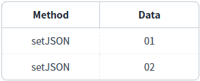
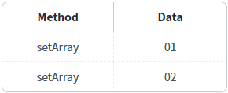
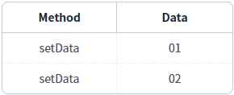
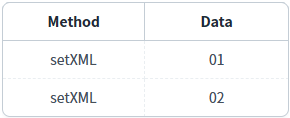

DataList의 메소드를 사용하여 데이터의 타입별로 전체 데이터를 설정하는 예제입니다. 데이터의 타입은 4가지이며, 각 타입에 맞는 메소드는 다음과 같습니다.
JSON 형식 : setJSON
1차원 Array 형식 + 컬럼 정보 : setArray
1차원 Array 형식 : setData
XML 형식 : setXML
대량 데이터를 할당하는 경우 메소드 setData 또는 setArray를 사용하는 것이 속도 개선에 도움이 됩니다.
전체 데이터를 JSON 형식으로 설정하기
컬럼 정보와 함께 전체 데이터를 1차원 Array 형식으로 설정하기
전체 데이터를 1차원 Array 형식으로 설정하기
전체 데이터를 XML 형식으로 설정하기
1
STEP 1: '전체 데이터 설정하기 - JSON 형식' 버튼을 클릭합니다.
2
STEP 2: 실행 결과를 확인합니다.
DataList에 데이터가 할당되고 DataList와 연결된 GridView에 데이터가 출력됩니다. 버튼 하단에 구성된 GridView를 확인합니다.
Image 1.브라우저(Chrome) 실행 예시

영역 '로그 확인'에 출력된 로그를 통해 설정된 데이터의 형식을 확인할 수 있습니다.다. (브라우저의 개발자 도구 콘솔에도 로그가 출력되며, 설정된 객체를 확인할 수 있습니다.)
Example 1.Log
[16:12:24] # 전체 데이터 설정하기 - JSON 형식 | 메소드 setJSON 실행
데이터 예시
[16:12:24] [{"method":"setJSON","label":"01"},{"method":"setJSON","label":"02"}]1
STEP 1: '전체 데이터 설정하기 - 1차원 Array 형식 + 컬럼 정보' 버튼을 클릭합니다.
2
STEP 2: 실행 결과를 확인합니다.
DataList에 데이터가 할당되고 DataList와 연결된 GridView에 데이터가 출력됩니다. 버튼 하단에 구성된 GridView를 확인합니다.
Image 2.브라우저(Chrome) 실행 예시

영역 '로그 확인'에 출력된 로그를 통해 설정된 데이터의 형식을 확인할 수 있습니다.다. (브라우저의 개발자 도구 콘솔에도 로그가 출력되며, 설정된 객체를 확인할 수 있습니다.)
Example 2.Log
[16:12:59] # 전체 데이터 설정하기 - 1차원 Array 형식 + 컬럼 정보 | 메소드 setArray 실행
데이터 예시
[16:12:59] {"columnInfo":["method","label"],"data":["setArray","01","setArray","02"]}1
STEP 1: '전체 데이터 설정하기 - 1차원 Array 형식' 버튼을 클릭합니다.
2
STEP 2: 실행 결과를 확인합니다.
DataList에 데이터가 할당되고 DataList와 연결된 GridView에 데이터가 출력됩니다. 버튼 하단에 구성된 GridView를 확인합니다.
Image 3.브라우저(Chrome) 실행 예시

영역 '로그 확인'에 출력된 로그를 통해 설정된 데이터의 형식을 확인할 수 있습니다.다. (브라우저의 개발자 도구 콘솔에도 로그가 출력되며, 설정된 객체를 확인할 수 있습니다.)
Example 3.Log
[16:13:28] # 전체 데이터 설정하기 - 1차원 Array 형식 | 메소드 setData 실행 데이터 예시 [16:13:28] ["setData","01","setData","02"]
1
STEP 1: '전체 데이터 설정하기 - XML 형식' 버튼을 클릭합니다.
2
STEP 2: 실행 결과를 확인합니다.
DataList에 데이터가 할당되고 DataList와 연결된 GridView에 데이터가 출력됩니다. 버튼 하단에 구성된 GridView를 확인합니다.
Image 4.브라우저(Chrome) 실행 예시

영역 '로그 확인'에 출력된 로그를 통해 설정된 데이터의 형식을 확인할 수 있습니다.다. (브라우저의 개발자 도구 콘솔에도 로그가 출력되며, 설정된 객체를 확인할 수 있습니다.)
Example 4.Log
[16:13:56] # 전체 데이터 설정하기 - XML 형식 | 메소드 setXML 실행 데이터 예시 [16:13:56] <list><map><method>setXML</method><label>01</label></map><map><method>setXML</method><label>02</label></map></list>
컴포넌트의 메소드 'setJSON' 메소드를 사용하여 스크립트를 작성합니다. 첫 번째 인자에 설정할 데이터를 JSON 형식으로 전달합니다.
Example 5.Script
// 예제 파일에서는 스크립트 scwin.btn_exam1_1_onclick에 작성되어 있습니다. // DataList 'dlt_exam'의 전체 데이터를 JSON 형식으로 설정합니다. let data = [ { "method": "setJSON", "label": "01" }, { "method": "setJSON", "label": "02" }a ]; dlt_exam.setJSON(data);
컴포넌트의 'setArray' 메소드를 사용하여 스크립트를 작성합니다. 첫 번째 인자에 설정할 데이터를 JSON 형식으로 전달합니다.
Example 6.Script
// 예제 파일에서는 스크립트 scwin.btn_exam1_2_onclick에 작성되어 있습니다. // DataList 'dlt_exam'의 전체 데이터를 '1차원 Array 형식 + 컬럼 정보'으로 설정합니다. // DataList의 컬럼 "method"와 "label"에 데이터를 설정합니다. let data = { "columnInfo": ["method", "label"], "data": ["setArray", "01", "setArray", "02"] }; dlt_exam.setArray(data);
Example 7.Script
// "columnInfo"에 정의된 컬럼의 순서에 맞춰 "data"에 데이터를 1차원 배열로 구성합니다. { "columnInfo": ["column_1", "column_2"], // DataList의 컬럼 ID가 담긴 1차원 배열로 설정할 컬럼 ID를 작성. "data": ["column_1 row_1", "column_2 row_1", "column_1 row_2", "column_2 row_2"] // 'columnInfo'에 정의한 컬럼의 순서대로 구성된 1차원 배열 데이터. }
컴포넌트의 'setData' 메소드를 사용하여 스크립트를 작성합니다. 첫 번째 인자에 설정할 데이터를 1차원 Array 형식으로 전달합니다. 데이터의 순서는 DataList에 정의된 컬럼의 순서와 일치해야 합니다.
Example 8.Script
// 예제 파일에서는 스크립트 scwin.btn_exam1_3_onclick에 작성되어 있습니다. // DataList 'dlt_exam'의 전체 데이터를 '1차원 Array 형식'으로 설정합니다. // 데이터의 순서는 DataList에 정의된 컬럼의 순서와 일치해야 합니다. let data = ["setData", "01", "setData", "02"]; dlt_exam.setData(data);
Example 9.Source - DataList
<w2:dataList baseNode="list" id="dlt_exam" repeatNode="map"> <w2:columnInfo> <w2:column dataType="text" id="method" name="Method"></w2:column> <w2:column dataType="text" id="label" name="Data"></w2:column> </w2:columnInfo> </w2:dataList>
컴포넌트의 'setXML' 메소드를 사용하여 스크립트를 작성합니다. 첫 번째 인자에 설정할 데이터를 XML 형식으로 전달합니다. XML의 노드명은 Dataist의 'baseNode' 속성과 'repeatNode' 속성의 값에 정의된 값으로 구성됩니다.
Example 10.Script
// 예제 파일에서는 스크립트 scwin.btn_exam1_4_onclick에 작성되어 있습니다. // DataList 'dlt_exam'의 전체 데이터를 XML 형식으로 설정합니다. let data = WebSquare.xml.parse("<list><map><method>setXML</method><label>01</label></map><map><method>setXML</method><label>02</label></map></list>"); dlt_exam.setXML(data);
Example 11.Data
<list>
<map>
<method>setXML</method>
<label>01</label>
</map>
<map>
<method>setXML</method>
<label>02</label>
</map>
</list>Example 12.Source - DataList
<w2:dataList baseNode="list" id="dlt_exam" repeatNode="map"> <w2:columnInfo> <w2:column dataType="text" id="method" name="Method"></w2:column> <w2:column dataType="text" id="label" name="Data"></w2:column> </w2:columnInfo> </w2:dataList>
setJSON( jsonData , append )
setArray( jsonData , append )
setData( arr , append , columnArr , rowStatus )
setXML( xmlData , append )